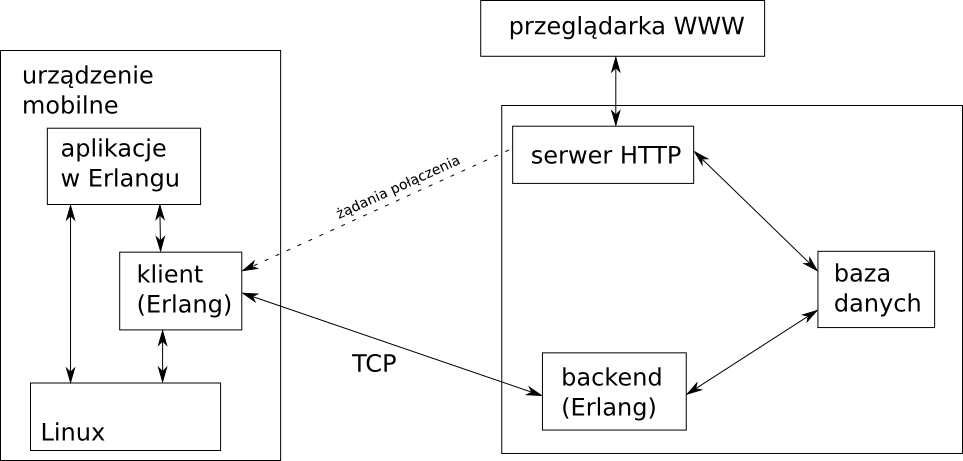

Your browser doesn't support the features required by impress.js, so you are presented with a simplified version of this presentation.
For the best experience please use the latest Chrome or Safari browser. Firefox 10 (to be released soon) will also handle it.
Platforma do automatycznych aktualizacji oprogramowania na urządzeniach zdalnychPrzemysław Dąbek
Roman Janusz
Tomasz Kowal
Małgorzata Wielgus
Architektura
Integracja z menedżerem pakietów .deb
Wyniki prac:
Kluczowe osiągnięcia:
Dziękujemy za uwagę